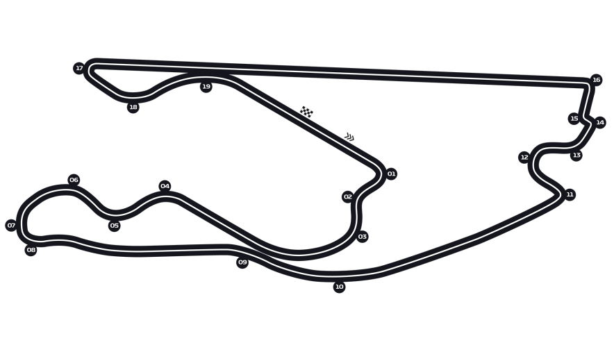

GP de Miami - 06 à 08/Maio

Fazendo sua estréia na F1 em maio de 2022, o Autódromo Internacional de Miami é um circuito temporário, mas projetado para ter uma sensação permanente. Situado no complexo Hard Rock Stadium em Miami Gardens, lar da famosa franquia Miami Dolphins da NFL, a pista é o culminar de um processo de desenvolvimento que simulou nada menos que 36 layouts diferentes antes de se estabelecer em uma emocionante volta de 19 curvas que oferece uma vibração do circuito de rua, não muito diferente do Albert Park de Melbourne.